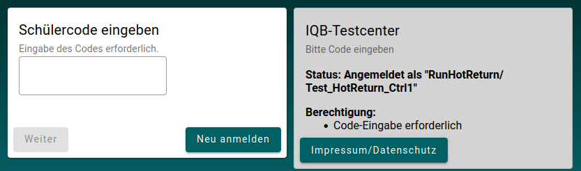
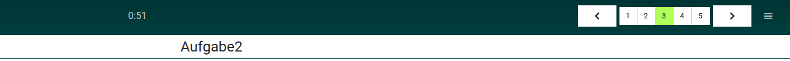

Konfiguration
Mit Hilfe der beiden Dateien Testtaker-XML und Booklet-XML kann das Verhalten und das Aussehen einer Studie konfiguriert werden. Die Konfigurationsmöglichkeiten sind groß und manchmal ist man sich der komplexen Auswirkungen einer Konfigurationen gar nicht bewusst. Daher sollen an dieser Stelle die wichtigsten Konfigurationsmöglichkeiten einmal beschrieben werden. Dazu werden nachfolgend einige Punkte genannt, die alle Studienverantwortlichen im Vorfeld betrachten sollten.
Detaillierte Informationen zu den beiden XML-Dateien sind dem Kapitel: Testinhalte zu entnehmen.
Testtaker-XML
Adaptives Testen
Sollen Aufgaben in Abhängigkeit der gegebenen Antworten angezeigt werden, muss dies stellenweise in der Testtaker-XMl konfiguriert werden. Mehr dazu ist dem Kapitel: Adaptives Testen zu entnehmen.
Aufteilung der Zugänge
Die Zugangsdaten können Gruppen zugeordnet werden. Alle gegebenen Antworten werden dann abhängig von der Gruppe gespeichert, sprich der Datensatz wird mit dem Namen der jeweiligen Gruppe im Testcenter abgespeichert. Im Vorfeld sollten sich die Studienverantwortlichen gut überlegen, wie die Zugangsdaten gruppiert werden sollen. So wird eine schnelle Zuordnung der Testpersonen bei der Auswertung erreicht.
Zeitliche Beschränkungen der Zugänge
Die angelegten Zugangsdaten in der Testtaker-XML können zeitlichen Beschränkungen unterliegen. Folgende stehen zur Auswahl:
validFrom: Eine Anmeldung mit den Zugangsdaten kann erst ab einer bestimmten Zeit erfolgen. Die Eingabe erfolgt im Format: dd/mm/yyyy hh:mmvalidTo: Eine Anmeldung kann bis zu einer bestimmten Zeit erfolgen. Die Eingabe erfolgt im Format: dd/mm/yyyy hh:mmvalidFor: Eine Anmeldung kann in einem bestimmten Zeitfenster erfolgen. Format: Minuten Integer
Zeitliche Beschränkungen können als Attribut einer Gruppe (group) zugewiesen werden. Nachfolgend ein Beispiel für ‘validTo’:
<?xml version="1.0" encoding="utf-8"?>
<Testtakers xmlns:xsi="http://www.w3.org/2001/XMLSchema-instance" xsi:noNamespaceSchemaLocation="https://raw.githubusercontent.com/iqb-berlin/testcenter/15.0.1/definitions/vo_Testtakers.xsd">
<Metadata>
<Description>
Beispielhafte Testtaker-XML
</Description>
</Metadata>
<CustomTexts>
<CustomText key="app_title">Hier steht ein Custom Text</CustomText>
</CustomTexts>
<Group id="Gruppe 1" validTo="1/3/2024 19:30" label="An already expired group">
<Login mode="run-hot-restart" name="Testperson1" pw="vgf5z">
<Booklet>BOOKLET.SAMPLE-1</Booklet>
</Login>
<Login mode="run-hot-restart" name="Testperson2" pw="vgfjh">
<Booklet>BOOKLET.SAMPLE-1</Booklet>
</Login>
</Group>
</Testtakers>Die beiden Testpersonen 1 und 2 können sich nur bis zum 01.03.2024 19:30Uhr anmelden. Danach ist eine Anmeldung nicht mehr möglich.
Textersetzungen
Bestimmte Texte in der Anwendung und während des Studienlaufs können individuell angepasst werden. Im Vorfeld können Überlegungen stattfinden, an welchen Stellen die Standardtexte durch individuelle Texte ersetzt werden sollen.
Texte werden mit Hilfe bestimmter Attribute und Daten in der Testtaker-XML geändert. Hierfür gibt es eine spezielle Liste mit möglichen Werten, die im Element: <CustomText> dem Attribut: key hinzugefügt werden können. Werden Texte nicht ersetzt, erhalten sie einen Standardtext. Welcher Text das ist, ist ebenfalls der Liste zu entnehmen.
Beispiel zum ändern eines Standardtextes:
Ist in der Testtaker-XML ein Code zu einem Testheft angegeben, erscheint nach der Anmeldung ein Fenster zur Codeeingabe mit dem Standardtext: “Bitte gib den Schülercode ein….” (siehe Liste). Dieser Standardtext soll hier nun durch einen individuellen Text ersetzt werden.

Dazu wird in der Testtaker-XML im Element: <CustomText> dem Attribut: key der Listenwert: login_codeInputPrompt zugewiesen und mit dem individuellen Text versehen. Anschließend wird die so angepasste XML wieder in das Testcenter geladen.
<Testtakers>
<Metadata>
<Description>Beispielhafte Testtaker-XML</Description>
</Metadata>
<CustomTexts>
<CustomText key="login_codeInputPrompt">Eingabe des Codes erforderlich.</CustomText>
</CustomTexts>
<Group id="Gruppe 1" label="Gruppe mit Codes">
<Login mode="run-hot-return" name="Klasse 3a" pw="hg7zn">
<Booklet codes="xxx">BOOKLET.SAMPLE-1</Booklet>
<Booklet codes="yyy">BOOKLET.SAMPLE-3</Booklet>
</Login>
<Login mode="monitor-group" name="test-group-monitor" pw="er45tz"/>
</Group>
</Testtakers>Nach Anmeldung einer Testperson, erscheint bei der Codeeingabe der neue Text.

Gruppenmonitor
Bei einer größeren Anzahl von Studienteilnehmer*innen kann es sinnvoll sein einen Gruppenmonitor einzusetzen. Dieser erlaubt der Testleitung die Testpersonen zu steuern und einzutakten. Der Gruppenmonitor wird mit Hilfe eines speziellen Zugangs mit dem Modus: monitor-group in der zu beobachtenden Gruppe angelegt. Siehe Code-Beispiel oben.
Mehr zum Gruppenmonitor ist dem gleichnamigen Kapitel zu entnehmen.
Booklet-XML
Konfigurationen zum Testheft können im Element: <Config> mit Hilfe des Attributs: key vorgenommen werden. Die möglichen Werte und Daten, die angegeben werden können, sind einer spezielle Liste zu entnehmen. Außerhalb dieses Elementes können weitere Konfigurationen erfolgen.
Adaptives Testen
Sollen Aufgaben in Abhängigkeit der gegebenen Antworten angezeigt werden, muss dies stellenweise in der Booklet-XMl konfiguriert werden. Mehr dazu ist dem Kapitel: Adaptives Testen zu entnehmen.
Anzeige Aufgaben-, Testheftbezeichner
Das in der Booklet-XML festgelegte Label einer Aufgabe oder das Label des Testheftes, können während der Testung angezeigt werden. Dies wird mit Hilfe des Wertes: unit_screenheaderund einem entsprechenden Datum aus der zugehörigen Liste festgelegt. Im nachfolgenden Bild wird der Titel der Aufgabe angezeigt.

Wie anhand der Navigationsleiste oben rechts gut zu sehen ist, befindet sich die Testperson in der dritten von 5 Aufgaben. In der Booklet-XML trägt die 3. Aufgabe das Label: Aufgabe2. Dieses Label wird im Kopf der Aufgabe angezeigt, wenn der Wert unit_screenheader mit dem Datum WITH_UNIT_TITLE in der BookletConfig beschrieben wird.
<Booklet xmlns:xsi="http://www.w3.org/2001/XMLSchema-instance" xsi:noNamespaceSchemaLocation="https://raw.githubusercontent.com/iqb-berlin/testcenter/14.3.0/definitions/vo_Booklet.xsd">
<Metadata>
<Id>BOOKLET.SAMPLE-1</Id>
<Label>Booklet sample 1</Label>
<Description>Beispielhafte Booklet-XML</Description>
</Metadata>
<BookletConfig>
<Config key="unit_screenheader">WITH_UNIT_TITLE</Config>
</BookletConfig>
<Units>
<Unit id="UNIT.SAMPLE-100" label="Startseite" labelshort="1" />
<Testlet id="Tslt1" label="Aufgabenblock">
<Restrictions>
<CodeToEnter code="Hase">Bitte gib das Freigabewort ein.</CodeToEnter>
<TimeMax minutes="1"/>
</Restrictions>
<Unit id="UNIT.SAMPLE-101" label="Aufgabe1" labelshort="2"/>
<Unit id="UNIT.SAMPLE-102" label="Aufgabe2" labelshort="3"/>
<Unit id="UNIT.SAMPLE-103" label="Aufgabe3" labelshort="4"/>
</Testlet>
<Unit id="UNIT.SAMPLE-104" label="Endseite" labelshort="5"/>
</Units>
</Booklet>Außerdem wird hier das Attribut labelshort im Element <Unit> verwendet. Der Wert dieses Attributes wird in der Navigationsleiste angezeigt (Zahlen in den Kästchen).
Erweiterte Optionen zur Navigation
Es kann ein zusätzliches Menu zur Aufgabennavigation angezeigt werden. Mit Hilfe dieses Menus kann ebenfalls durch die Aufgaben navigiert werden. Zusätzlich wird ein Schalter angeboten, um den Test beenden zu können. Der Schalter (Sandwich-Symbol) für das Menu befindet sich dann rechts neben der Navigationsleiste.

Das Ein-bzw. Ausschalten erfolgt in der Booklet-XML mit der Zuweisung des Wertes: unit_menu zu dem Attribut: keyund gewünschten Listendatum, in diesem Fall FULL.
Blockbeschränkungen
In der Booklet-XML können Aufgaben so genannten Testlets (Block) zugewiesen werden. Für einen Block können Beschränkungen festgelegt werden. Wird im Testverlauf der Block erreicht, muss dann bspw. ein Freigabewort eingegeben werden oder der Block muss innerhalb einer bestimmten Zeit abgearbeitet sein. Blöcke können sehr hilfreich sein, um Testpersonen zu synchronisieren. Eventuell sind einzelne Personen schneller im Durchlauf als andere. Die Testleitung kann die Bekanntgabe des Freigabewortes dann bspw. solange verzögern, bis alle an einem bestimmten Block angekommen sind.
Folgende Beschränkungen stehen zur Verfügung:
Freigabewort: Für den Zugriff auf den Block muss das richtige Freigabewort eingegeben werden.
Zeitbegrenzung: Die Aufgaben des Block sind nur für eine bestimmte Zeit zur Bearbeitung zu sehen. Nach Ablauf dieser Zeit wird der Block gesperrt. Möchte die Testperson den Block vor Ablauf der Zeit verlassen, erscheint eine Meldung, die darüber informiert, dass nicht in den Block zurückgekehrt werden kann. Nach Bestätigung dieser Meldung wird der Block gesperrt.
Beschränkungen Navigation: Unabhängig von Navigationsbeschränkungen in der Testheft-Konfiguration (
BookletConfig), können Navigationsbeschränkungen auch für einen Block festgelegt werden. Die konfigurierten Navigationsbeschränkungen im Block überschreiben dabei die Navigationsbeschränkungen in der Testheft-Konfiguration. Außerhalb des Testlets gelten dann wieder die Navigationsbeschränkungen, die in der Testheft-Konfiguration festgelegt sind.
Hier ein Block mit Beschränkungen:
<Booklet xmlns:xsi="http://www.w3.org/2001/XMLSchema-instance" xsi:noNamespaceSchemaLocation="https://raw.githubusercontent.com/iqb-berlin/testcenter/14.3.0/definitions/vo_Booklet.xsd">
<Metadata>
<Id>runhotres</Id>
<Label>Controller Mode: run-hot-restart</Label>
<Description>Beispielhafte Booklet-XML</Description>
</Metadata>
<BookletConfig>
<Config key="force_presentation_complete">OFF</Config>
<Config key="force_response_complete">OFF</Config>
</BookletConfig>
<Units>
<Unit id="UNIT.SAMPLE-100" label="Startseite" labelshort="1" />
<Testlet id="Tslt1" label="Aufgabenblock">
<Restrictions>
<CodeToEnter code="Hase">Bitte gib das Freigabewort ein.</CodeToEnter>
<TimeMax minutes="1"/>
<DenyNavigationOnIncomplete presentation="ALWAYS" response="ALWAYS" />
</Restrictions>
<Unit id="UNIT.SAMPLE-101" label="Aufgabe1" labelshort="2"/>
<Unit id="UNIT.SAMPLE-102" label="Aufgabe2" labelshort="3"/>
<Unit id="UNIT.SAMPLE-103" label="Aufgabe3" labelshort="4"/>
</Testlet>
<Unit id="UNIT.SAMPLE-104" label="Aufgabe4" labelshort="5"/>
<Unit id="UNIT.SAMPLE-105" label="Endseite" labelshort="6"/>
</Units>
</Booklet>In der Testheft-Konfiguration ist force_presentation_complete und force_response_complete ausgeschaltet. Im Block sind aber beide für die Navigationsrichtung rückwärts und vorwärts eingeschaltet. Außerhalb des Blocks gelten also keine Navigationsbeschränkungen, innerhalb des Blocks hingegen schon. Für den Zutritt zu diesem Block, muss das Freigabewort: “Hase” eingegeben werden. Die Testpersonen haben dann 1 Minute Zeit die 3 Aufgaben innerhalb des Blocks zu bearbeiten.
Strukturierung Testhefte
Hier kann keine generelle Empfehlung erfolgen, weil es in hohem Maß vom Umfang einer Studie und auch von den Erwartungen an eine Studie abhängt. Im Vorfeld sollten sich die Verantwortlichen eine konkrete Vorstellung davon machen, wie ihr Testheft aussehen soll. Nachfolgend ein paar gedanklichen Anregungen zur Gestaltung eines Testheftes.
Soll bspw. in einer Studie nur eine bestimmte Zeit zur Aufgabenbearbeitung gegeben werden, müssen die entsprechenden Aufgaben einem Block zugeordnet werden. Dieser Block erhält dann eine Zeitbeschränkung.
Weist der Personenkreis einer Studie ein unterschiedliches Niveau auf, kann es sinnvoll sein Blöcke mit Zugangsbeschränkungen zu versehen. Mit Hilfe dieser Zugangsbeschränkungen können die Personen synchronisiert werden. Das verhindert, dass einzelne Personen schon am Ende der Studie sind, während andere noch mitten drin stecken. Die Lehrkraft kann dann bspw. das Freigabewort zu einem Block erst nennen, wenn alle Schüler*innen bei dem entsprechenden Block angekommen sind.
Soll ein Gruppenmonitor zur Steuerung einer Studie zum Einsatz kommen, sollten Blöcke angelegt werden. Mit Hilfe des Gruppenmonitors kann die Testleitung die Testpersonen dann direkt zu einzelnen Blöcken leiten.
Das soll an dieser Stelle erst einmal ausreichend sein. Es gebe hier unzählige weitere individuelle Anforderungen an eine Studie, die eine bestimmte Struktur der Testhefte erfordern würden.
Test beenden
Es kann unter Umständen sinnvoll sein einen Test nach dem Beenden zu sperren. Dies kann mit Hilfe der Zuweisung des Wertes: lock_test_on_termination zum Attribut: key geschehen. Der Standardwert sorgt dafür, dass der Test nicht gesperrt wird. Das heißt, solange die Zugangsdaten (Testtaker-XML) im Testcenter vorhanden sind, können sich die dort definierten Personen am Testcenter anmelden und den Test fortsetzen.
Erprobung der Konfiguration
Es ist unerlässlich die erstellte Konfiguration ausreichend zu testen. Hierfür können im Vorfeld spezielle Modi, wie bspw. der Modus: run-simulation, run-demo oder run-review in der Testtaker-XML zu einem Login angelegt werden. Nach dem Login startet das Testcenter dann in einem dieser Probemodi. Soll die Konfiguration noch einmal geändert werden, ist die geänderte Testdatei (Testtaker-XML oder Booklet-XML) anschließend noch einmal in das Testcenter zu laden. Hat sich am Dateinamen und an der ID der jeweiligen Testdatei nichts geändert, wird die vorhandene Datei im Testcenter einfach überschrieben. Nach erneuter Anmeldung, läuft der Test mit der geänderten Konfiguration.
Mehr Informationen zur Verwendung eines Modus zur Erprobung sind dem Kapitel: Testinhalte/ Testtaker-XML zu entnehmen.
Testen Sie auch abschließend finale Zugänge für die Testpersonen in einem “heißen” Modus (run-hot-return, run-hot-restart) und kontrollieren Sie ob Antworten gespeichert wurden.
Testen Sie Gruppenmonitorzugänge, falls vorhanden.